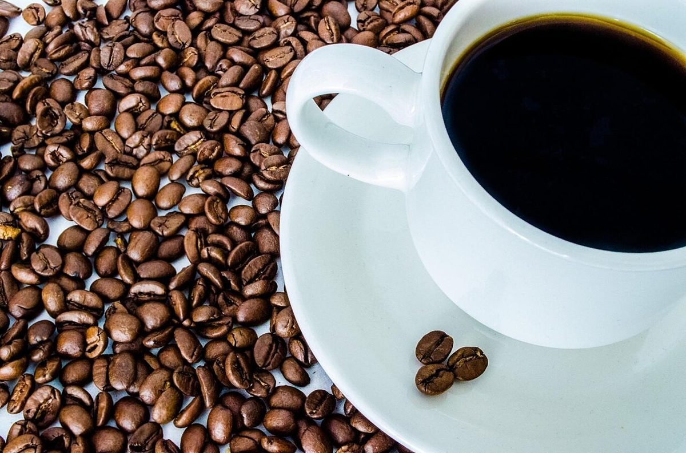
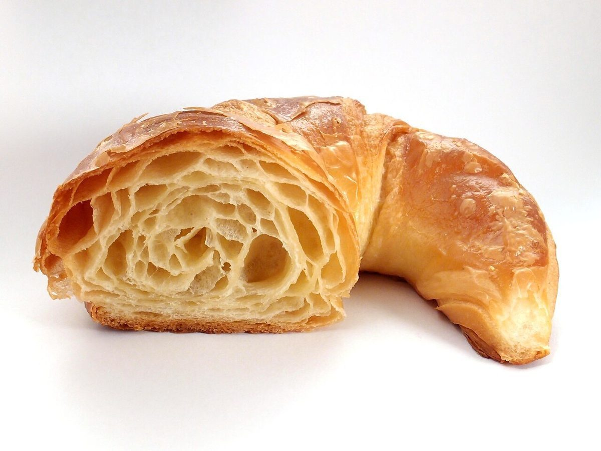

MENU
メニュー
メニューと価格は準備中です。詳しくはInstagramでご確認ください。



お品書き
準備中
| ドリンク | 準備中 |
|---|---|
| フード | 準備中 |
| 価格 | 準備中 |
ここに載せる内容は、お店からご提供いただいた情報に差し替えます。
写真(イメージ)
コーヒーとパンの写真



写真はコーヒーとパンのイメージです。お店のものではなく、お店で提供している商品を示すものでもありません。
部位ごとの見かた
お品書きも六つの欄に
- 1上ぶた兼コップ水筒のてっぺんにかぶせる、コップとしても使えるふた。
- 2中栓飲み口をふさぐ、ふたの内側にはまる栓。
- 3パッキン中栓のまわりに付く、すき間をふさぐ輪っか。
- 4本体中身を入れる、二重になった筒の部分。
- 5肩ひも持ち歩くために本体へ掛けて使うひも。
- 6底カバー本体の底を包んで、傷や音をやわらげるカバー。